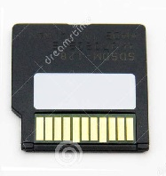
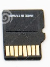

SD Cards
What is an SD card
Secure Digital, officially abbreviated as SD, is a proprietary non-volatile memory card format developed by the SD Association (SDA) for use in portable devices.
First introduced
The standard was introduced in August 1999 by joint efforts between SanDisk, Panasonic (Matsushita Electric) and Toshiba as an improvement over MultiMediaCards (MMCs), and has become the industry standard.
The three companies formed SD-3C, LLC, a company that licenses and enforces intellectual property rights associated with SD memory cards and SD host and ancillary products.
Type of cards
Mini Cards
The miniSD form was introduced at March 2003 CeBIT by SanDisk Corporation which announced and demonstrated it.
The SDA adopted the miniSD card in 2003 as a small form factor extension to the SD card standard.
While the new cards were designed especially for mobile phones, they are usually packaged with a miniSD adapter that provides compatibility with a standard SD memory card slot.
Micro Cards
microSD memory cards were born due to SD cards being too big for mobile phones.
Initially developed by SanDisk, microSD was later on embraced and standardized by the SD Card Association, which announced the form factor in 2005.
The initial microSD memory cards were slow and their capacities were limited to 2 GB due to the FAT16 file system, just like SD cards.
However, the SD Card Association was quick to release the next generation SDHC cards that lifted those limits.
microSD cards quickly gained popularity among portable device manufacturers for their small size
SDHC and SDIO

The SDHC format, announced in January 2006, brought improvements such as 32 GB storage capacity and
mandatory support for FAT32 filesystems.
In April, the SDA released a detailed specification for the non-security related parts of the SD memory card standard
and for the Secure Digital Input Output (SDIO) cards and the standard SD host controller.
In September 2006, SanDisk announced the 4 GB miniSDHC.Like the SD and SDHC, the miniSDHC card
has the same form factor as the older miniSD card but the HC card requires HC support built into the host device.
Devices that support miniSDHC work with miniSD and miniSDHC, but devices without specific support for miniSDHC work only with
the older miniSD card. Since 2008, miniSD cards are no longer produced.
SDXC
In January 2009, the SDA announced the SDXC family, which supports cards up to 2 TB and speeds up to 300 MB/s.
And later on other companies announced cards with read/write speeds up to 400mb/s
SanDisk in 2014 introduced 128GB microSDXC cards which was followed by a 200GB variant and later on 512gb and in 2019 a version which could hold 1TB of data
SDUC
The Secure Digital Ultra Capacity (SDUC) format, described in the SD 7.0 specification,
and announced in June 2018, supports cards up to 128 TiB (140 737 488 355 328 bytes) and offers speeds up to 985 MB/s
Features
Card security
Cards can protect their contents from erasure or modification, prevent access by non-authorized users, and protect copyrighted content using digital rights managementWrite-protect notch
Most full-size SD cards have a "mechanical write protect switch" allowing the user to advise the host computer that the user wants the device to be treated as read-only.
This does not protect the data on the card if the host is compromised.Some host devices do not support write protection,
which is an optional feature of the SD specification, and drivers and devices that do obey a read-only indication may give the user a way to override it.
The switch is a sliding tab that covers a notch in the card. The miniSD and microSD formats do not directly support a write protection notch, but they can be inserted into full-size adapters which do.
Card password
A host device can lock an SD card using a password of up to 16 bytes, typically supplied by the user.
A locked card interacts normally with the host device except that it rejects commands to read and write data. A locked card can be unlocked only by providing the same password.
The host device can, after supplying the old password, specify a new password or disable locking.
Without the password (typically, in the case that the user forgets the password), the host device can command the card to erase all the data on the card
for future re-use (except card data under DRM), but there is no way to gain access to the existing data.
SDIO cards
A SDIO (Secure Digital Input Output) card is an extension of the SD specification to cover I/O functions. SDIO cards are only fully functional in host devices designed to support their input-output functions.
SDIO cards support most of the memory commands of SD cards. SDIO cards can be structured as eight logical cards, although currently, the typical way that an SDIO card uses this capability is to structure itself as one I/O card and one memory card.